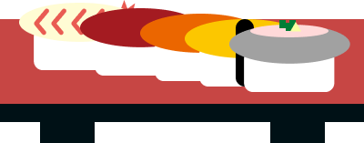
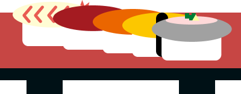

鳥取県米子市出身。前職ではゼネコンに勤務し、現場監督として工程管理や品質管理を担当してきました。 計画通りに物事を進めるためのスケジュール調整力や、正確さが求められる現場での経験を通じ、 責任感と粘り強さを身につけました。現在は職業訓練校でWebデザインとコーディングを学び、 これまで培った計画性や現場感覚を活かしながら、新しい分野でのスキル習得に励んでいます。 制作においては「使う人の視点」を大切にし、見やすく、わかりやすく、そして信頼感を与えるデザインを心がけています。
About me
 
